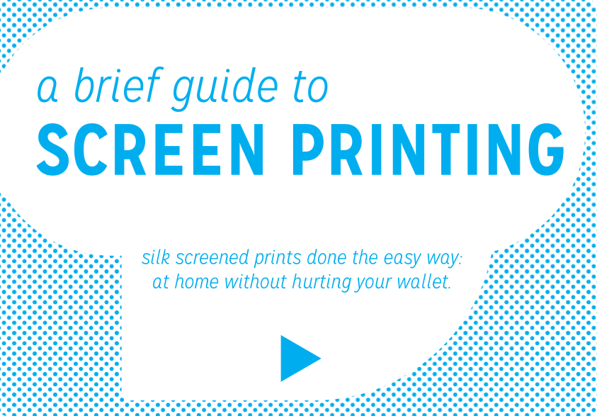
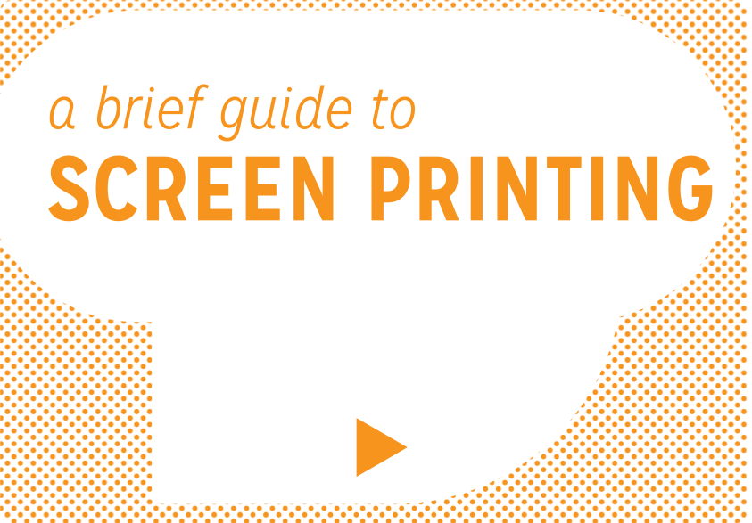
Aluminum or wood frames coupled with monofilament mesh is the most durable option for a reliable screen.
Any brand will do. This will be used to make the printer paper (with your image) transparent.
This will be used to burn the image onto the screen from the transparent printer paper.
This paper is for screen printing. Bristol works well for absorbing ink, as do other textured paper types.
Make sure your squeegee is straight and will dispense pressure evenly when making pulls across the screen.
For this specific project (printing on Bristol paper), use an Acrylic based screen printing ink.
This will be used to burn the image into the screen, so the higher wattage is necessary.
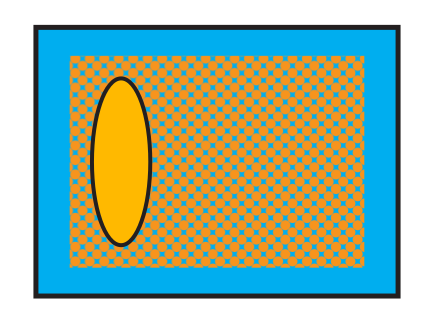
 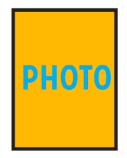
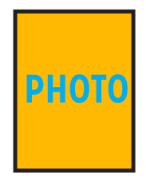
 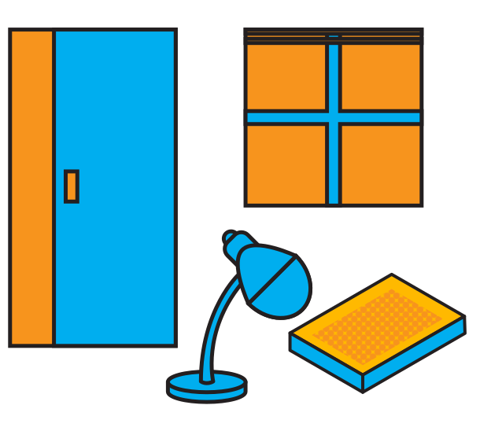
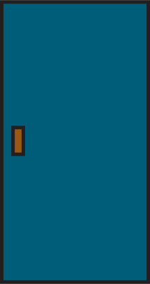
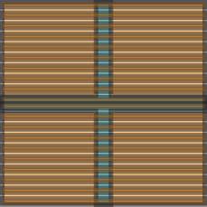
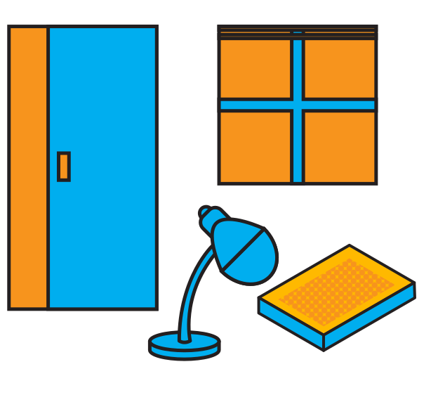
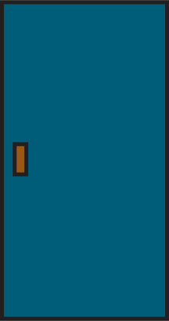
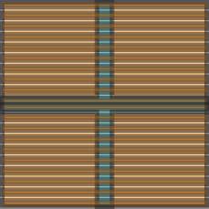


 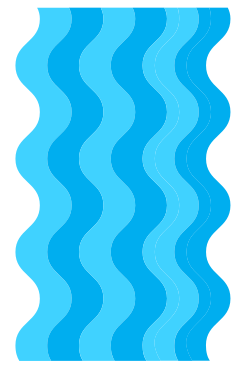
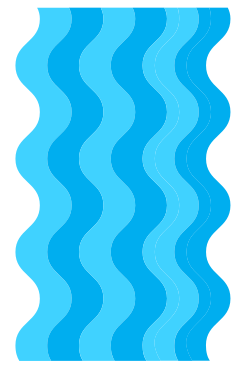
 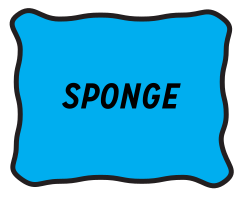
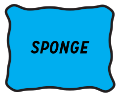